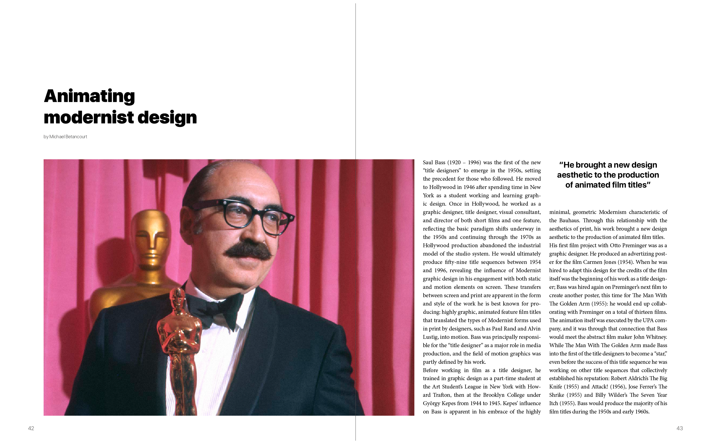
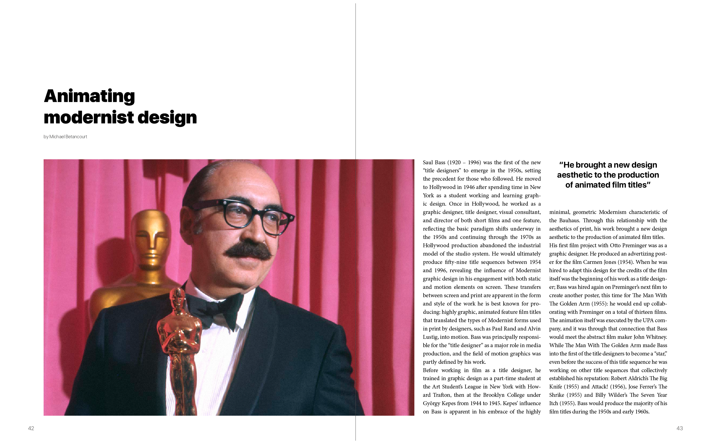

La nostra monografia esplora la mente di uno degli artisti più prolifici del secolo scorso: Saul Bass. Insieme esploreremo la sua rivoluzione nel mondo del graphic design, del cinema, dell'animazione e del gusto artistico in generale: tutto partendo dalle sue stesse parole.


Concentrandoci sull'intervista di Archie Boston nel 1986, abbiamo creato cinque segmenti per esprimere la poetica di Bass, inserendo articoli accuratamente selezionati e estratti di libri. Scopriremo i punti cardine del suo pensiero e i consigli per sfondare, partendo dall’importanza di imparare a disegnare e finendo con uno sguardo dall’interno sul rapporto cinema-design.


Saul Bass ha sempre innovato, rinnovando il cinema con i suoi titoli di testa, elaborando teorie per la corporate identity e mostrandoci quanto possa essere giocosa la nostra vita quotidiana. La monografia esplicita la sua personalità, lasciando il giusto spazio perché siano le opere a parlare e collezionando testimonianze da epoche diverse per mostrare l’influenza che ha avuto.

Tenendo a mente la sua passione per le idee rivoluzionarie, abbiamo scelto Catchoom per offrire una nuova esperienza multimediale. Scaricata l'app di Craftar dal proprio marketplace mobile, basterà inserire come user-name: saulbass.polimi@gmail.com e come password: polimi2018 per essere catapultati nei contenuti.

Trovando l'icona dell’occhio sulla pagina, aprite l'app e puntatela sulla grafica: un clic su "scansiona" e l'immagine su carta diventerà un collegamento al video dal nostro canale vimeo. Vedrete i titoli di apertura come sono stati proiettati nei cinema e avrete accesso alla nostra libreria video senza dover iscriversi o puntare ai codici QR.

 
